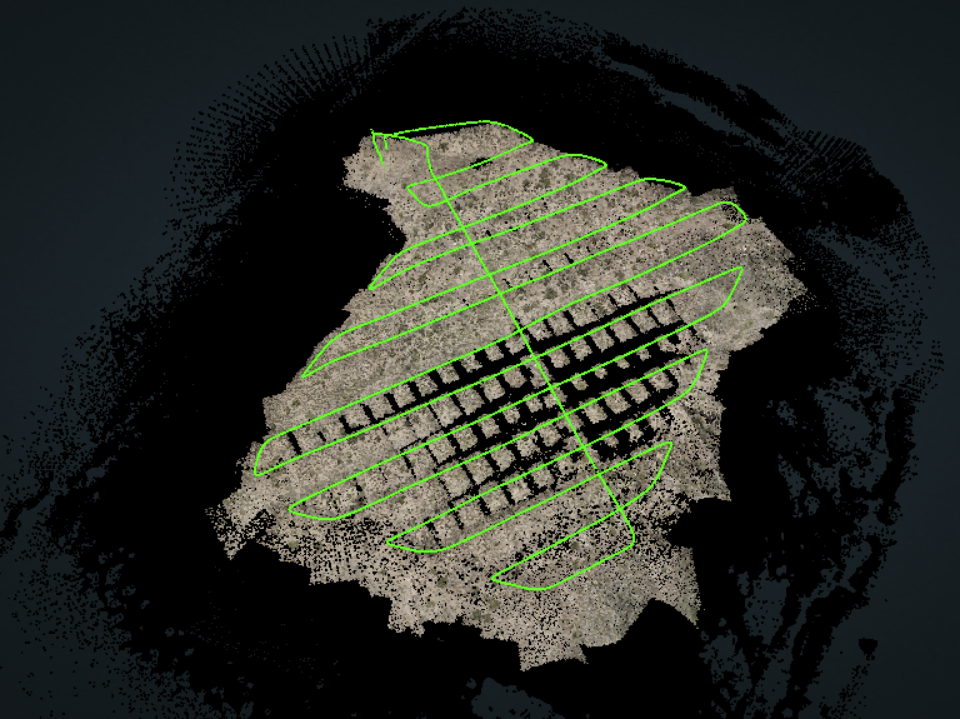
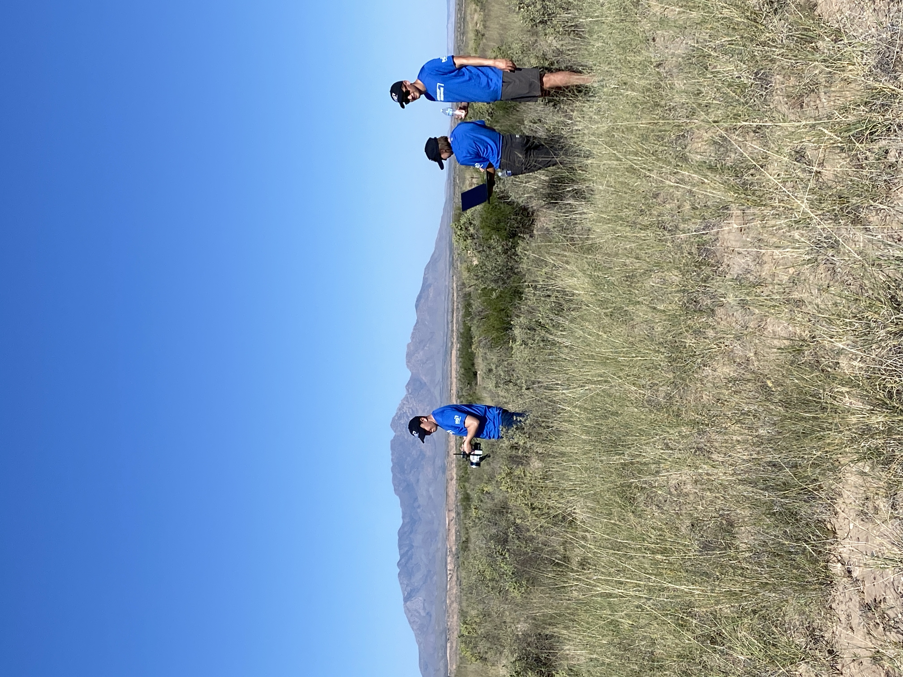
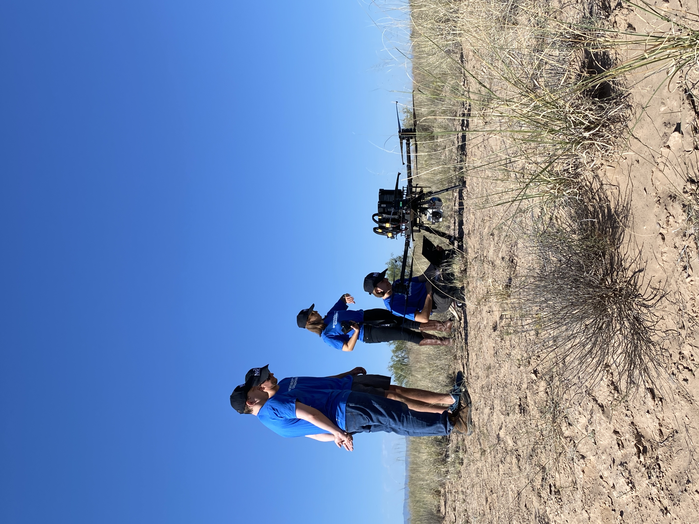

LA JOYA, NEW MEXICO— Sevilleta Pueblo was home to an Ancestral Piro pueblo, Tzelaqui, and was later settled into a small Spanish mission in the early 17th century. Shortly after the Pueblo Revolt of 1680, the Piro people led a similar attack against the Spanish settlers, but were ultimately unsuccessful in retaking Tzelaqui. By 1681 Tzelaqui/Sevilleta had been abandoned and the Piro people migrated in different directions and became part of other pueblos
As a result, very little documentation of the Ancestral Piro exists apart from written Spanish documents from the time. Archaeological research is limited to these primary sources and evidence from 20th century land surveys. Dr. Michael Bletzer, archaeologist, has led independent research on Sevilleta, successfully uncovering foundations of pueblo room blocks and Spanish Colonial structures on private land in La Joya, NM. With access to Light Detection and Ranging (LiDAR) systems, the Cultural SITEs team offered to facilitate a greater range of data collection at Sevilleta, producing point cloud models and digital terrain maps of the site.


Sevilleta was the second site scanned for Cultural SITEs, with data collection taking place in September 2023. The site presented a unique opportunity as it is one of the only excavatable and researchable remnants of a Piro Pueblo—their material culture and built environments being mostly located beneath the city of Socorro, NM. The Piro inhabited the southern Rio Grande valley and, as a result of their gradual assimilation into neighboring pueblo groups, they do not persist as a distinct group in the way many other Pueblo peoples have.
Dr. Michael Bletzer, an archaeologist working with the Isleta Pueblo Tribal Historic Preservation Office, has dedicated much of his career to researching the Piro people and has produced extensive scholarship on their history and culture. For approximately 15 years, Dr. Bletzer had been working to locate and study Piro structures that are documented in Spanish Colonial maps. However, one Piro outpost, Tzelaqui, located approximately 15 miles north of Socorro on the eastern bank of the Rio Grande, sits on private property and presented a viable opportunity for investigation. After developing a relationship with the landowner and obtaining permission to conduct fieldwork, Dr. Bletzer successfully uncovered room block footprints as well as evidence of Spanish Colonial structures at the site, corroborating his research.
Dr. Bletzer, working with the Isleta Pueblo Tribal Historic Preservation Office, has produced extensive scholarship on Piro history and culture including locating Piro structures. The Tzelaqui/Sevilleta outpost, located about 15 miles north of Socorro on the eastern bank of the Rio Grande, sits on private land and presented a viable opportunity for Dr. Bletzer’s research and investigation. After obtaining permission to conduct fieldwork on the property, he found room block footprints as well as architectural remains of Spanish Colonial structures.
Among Dr. Bletzer’s research questions was whether a visible arroyo at the Tzelaqui/Sevilleta site might have functioned as an offshoot of the Camino Real, the historic trade and colonial road that connected Mexico City to the northern frontier of New Spain. To investigate this and other geological and archaeological questions about the site’s use and history, the SITEs team decided that LiDAR was the most appropriate data collection method.
NG T4C’s team recruited three specialists from the company’s Mission Systems sector to travel to New Mexico with a drone equipped with a LiDAR payload to assist in the effort. The team conducted multiple drone flights over the site and also manually dragged the LiDAR sensor across the ground surface in targeted areas. Dr. Bletzer worked closely alongside the team throughout the process, directing them toward areas of particular research interest. The project utilized Phoenix LiDAR Systems as both the hardware and software platform.
{kind=link}
{kind=link}
{kind=link}
{kind=link}